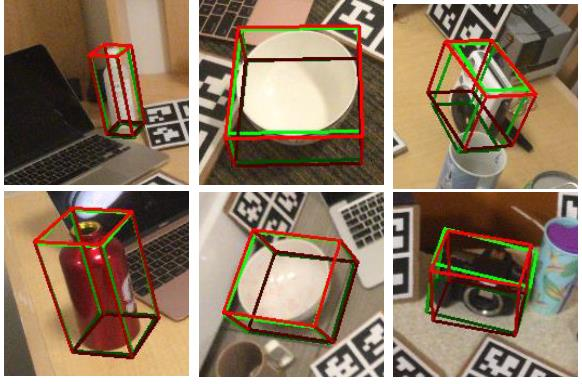
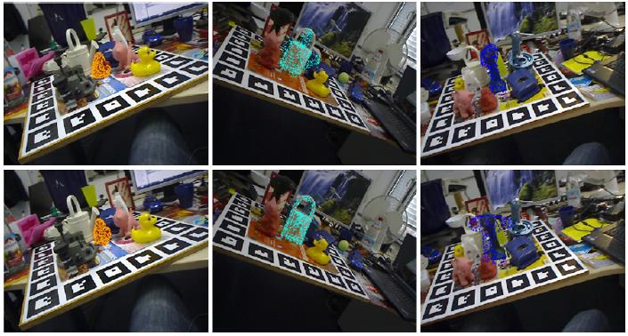
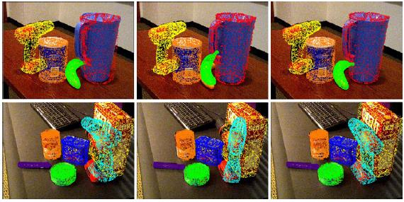
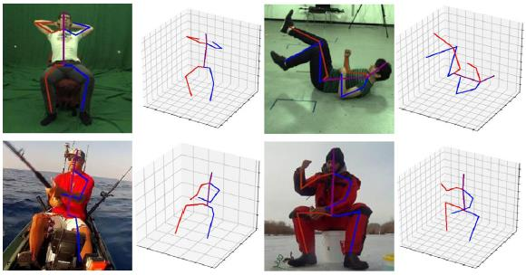

Ph.D. student, |
I am currently a third year Ph.D. student in University of Science and Technology of China, supervised by Prof. Zhangjin Huang and Prof. Naijie Gu.
Before that, I received the B.Sc. degree at the College of Information Engineering from Sichuan Agricultural University in 2018.
Research Interests: Object Pose Estimation, Human Activity Analysis, 3D Object Detection, Point Cloud Processing, etc.
|  |
|
|  |
|
|  |
|
|  |
|
Effective Low-energy Scheme for Mobile Data Collection and Wireless Charging
Ping Zhong, Aikun Xu, Yiwen Zhang, Yating Li, Yiming Zhang, Jiawei Huang, Jianxin Wang
Ruan Jian Xue Bao/Journal of Software, 2021.[PDF]
EMPC: Energy-Minimization Path Construction for Data Collection and Wireless Charging in WRSN
Ping Zhong, AiKun Xu, Shigeng Zhang, Yiming Zhang and Yingwen Chen
Pervasive and Mobile Computing (PMC), 2021. [JCR Q2][PDF]